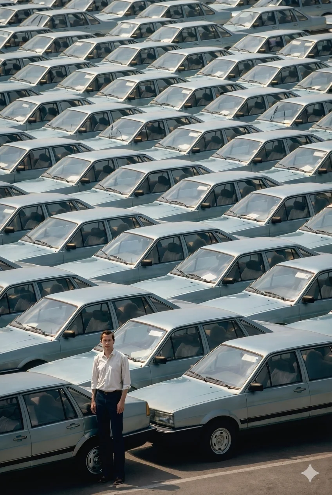

Tre giornate su digitale, videogame e intelligenza artificiale
Un progetto STEADYCAM
Come le automobili hanno trasformato il nostro modo di muoverci e vivere lo spazio, il digitale sta ridefinendo la nostra esistenza. Il progetto "Il Corpo e la Macchina" esplora questa relazione attraverso tre giornate di laboratori ed eventi aperti a ragazzi, operatori e cittadinanza.
📍 Bra (CN) | Centro di documentazione audiovisiva ASLCN2
Una giornata dedicata alla consapevolezza nell'uso dei social media, per comprendere i meccanismi di coinvolgimento e sviluppare strategie di utilizzo più sano ed equilibrato.
Due giornate per esplorare le potenzialità creative dell'intelligenza artificiale, imparando a utilizzarla come strumento di apprendimento e non solo di consumo passivo.
Due giornate per scoprire la relazione tra videogiochi e salute mentale, comprendendo quando il gaming diventa risorsa e quando invece può diventare problematico.
Scopri come il digitale può diventare uno strumento di crescita e consapevolezza. Iscriviti agli eventi e unisciti a noi nel percorso verso un utilizzo più equilibrato della tecnologia.